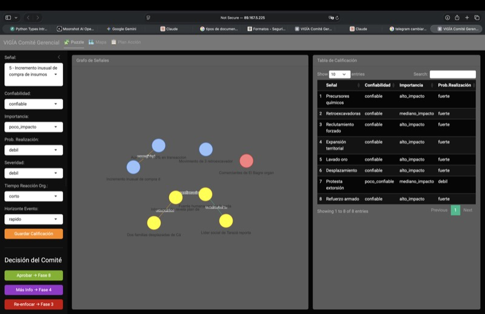
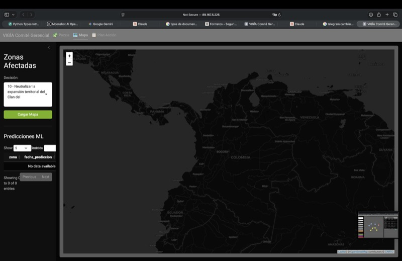
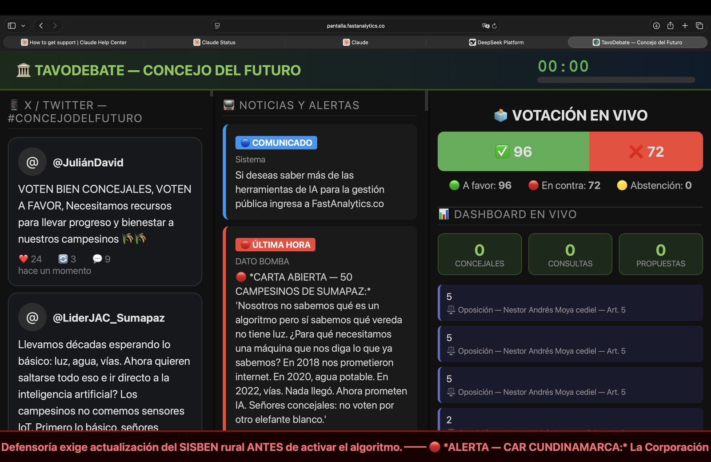
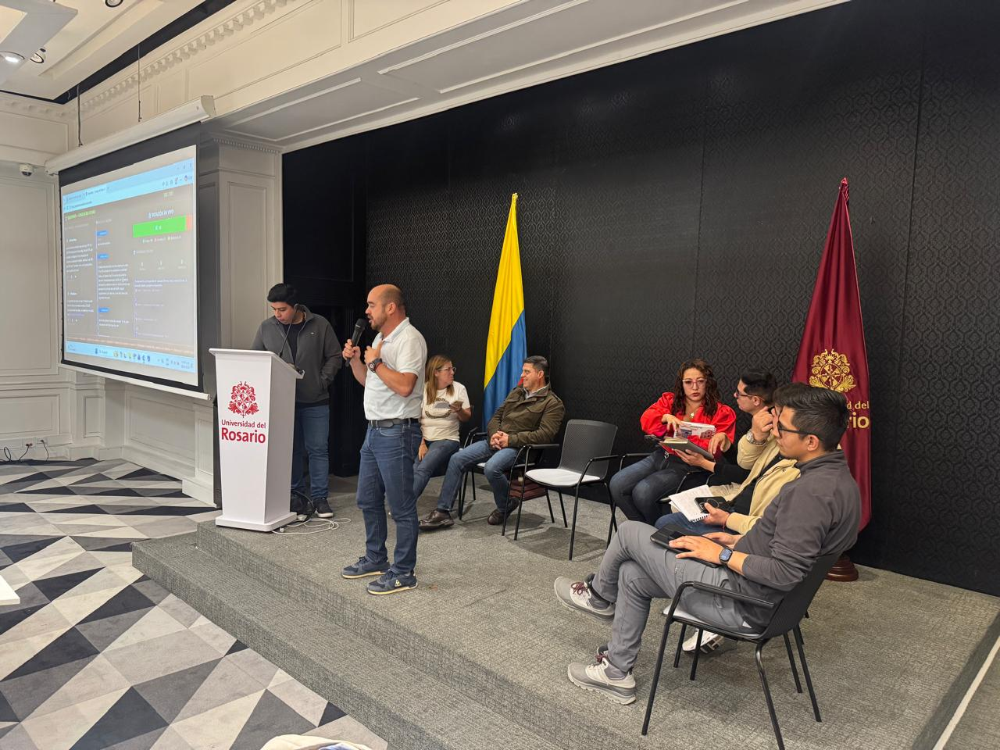

Nuestros productos
Productos que ya usan entidades públicas y privadas, más demos interactivas para que los pruebes tú mismo.

AlejoSeguro
¿Cómo se siente la seguridad en tu barrio? Este bot recoge esa respuesta de miles de ciudadanos en Bogotá. Anónimo, en 2 minutos, directo desde Telegram.


- Anónimo y en solo 2 minutos
- Miles de datos recolectados
CeciEnseña
Un profesor disponible a cualquier hora. Usa IA para crear experiencias de aprendizaje personalizadas, directo en Telegram. Pregunta lo que quieras.
- Responde preguntas al instante
- Se adapta a tu nivel y ritmo
- Disponible 24/7 en Telegram
GabyPredice
Sistema de toma de decisiones predictivas que detecta señales débiles antes de que se conviertan en crisis. 5 capas de inteligencia: chat en Telegram, dashboards con mapas de calor, grafos de actores, reportes PDF y audio. Asistentes de IA coordinados analizan patrones espacio-temporales y preparan todo para que el comité decida con datos, no con intuición.



- Detecta señales débiles predictivas con Machine Learning
- Eneágono Decisional de 9 fases: del dato a la acción
- Asistentes IA coordinados: uno piensa, otro ejecuta, otro reporta
- Información a demanda sobre seguridad, delitos y percepción ciudadana
TavoDebate
Sistema de sesiones legislativas y normativas con 10 IAs especializadas trabajando en paralelo. Probado en la Especialización en Gobernanza y Desarrollo Territorial — Universidad del Rosario, con concejales de todos los municipios de Cundinamarca: 527 consultas, 73 enmiendas, votaciones artículo por artículo — exactamente como un concejo real.



- Antes: IAs jurídica y fiscal preparan ponencias, revisan artículo por artículo y anticipan riesgos normativos con evidencia
- Durante: se convocan en paralelo las IAs relevantes (jurídica, económica, catastral, política, comunicaciones) y entregan una recomendación ejecutiva consolidada
- Redacta enmiendas con lenguaje normativo listas para proponer, genera tuits y réplicas a medios, y mantiene memoria activa de todo lo que ocurre en sala
- Al cierre: consolidación automática del texto final del acuerdo y reporte individual de desempeño para cada participante
Chronnet
Construye una red espacio-temporal paso a paso. Selecciona celdas en múltiples franjas de tiempo y genera los enlaces que revelan patrones ocultos.
- Taller interactivo en navegador
- Visualización de redes criminales
- Usado en conferencias IACP
Demo seguridad urbana
Explora un dashboard interactivo de seguridad urbana con mapas, métricas y narrativa guiada para presentaciones a clientes.
- Mapas y visualizaciones interactivas
- Narrativa guiada paso a paso
- Ideal para conferencias y reuniones
Mile-IA
Asistente de IA para investigación de fraude bancario. Analiza transacciones, genera reportes y explica el riesgo en lenguaje natural.
- Chat con memoria y evidencia
- Análisis de redes de actores
- Reportes PDF y audio
GusCoordina
Sala digital para Puestos de Mando Unificado (PMU). Coordina delegados de múltiples entidades, consolida métricas en tiempo real, genera boletines con IA y aplica modelos analíticos predictivos (R + Quarto) sobre seguridad, salud, movilización y más.
- Chat en lenguaje natural con Gus, el asistente del PMU
- Perfiles de administrador y delegados con aprobación
- Analítica en R: tendencias, hotspots, riesgo, redes y reportes Quarto


¿Quieres ver más?
Tips, casos reales y herramientas de IA que compartimos gratis.